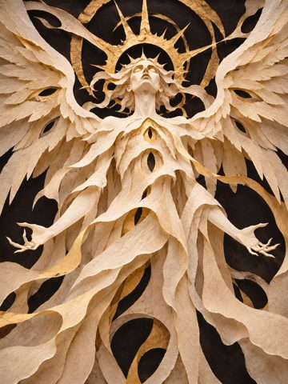
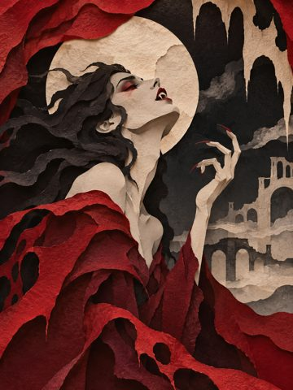
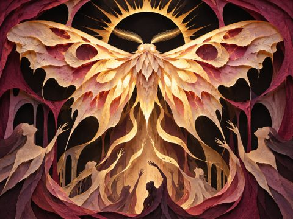

Dusk & Dawn · design proposal · 3 November 2026
A hand with two faces.
One uncanny enemy.
Play a card’s visible effect or change the hand to find another answer. Build a small deck through a short run. Light and dark are moods and forms, never moral teams.
This is a design proposal, not a playable implementation or a claim of balanced values. All 496 card faces and 110 enemy artworks have a recorded individual thematic review.



01 · The idea
Each physical card has a light face and a dark face. Spend 1 mana to play its visible effect. Some effects Flip held cards, revealing different options immediately. Face one enemy at a time, with its complete next action shown before deciding what to play.
There is no battlefield, opposing deck, poker hand or score multiplier. Enemy actions use familiar rules with their own names and values. They do not secretly play player cards or share their balance definitions.
02 · A turn
- At the start of the player turn, halve remaining player Ward, rounding down, refill to 3 mana and draw up to 5 new cards within the 8-card hand cap. Apply any visible next-draw or refill modifier, then clear that modifier.
- Inspect the complete enemy intent: base hits, labeled trait, statuses, card movement and any conditional or next-turn effect. Play cards for 1 mana each.
- Begin End Turn: clear Scry. Discard unkept cards; kept cards remain on their current faces and lose their markers.
- Resolve player Burn, player Poison, enemy Burn, then enemy Poison. Each tick deals its current amount, then that status halves, rounding down; remove it at 0. Defeat ends combat immediately, except that a player card already resolving finishes its effects if the enemy is defeated.
- If the enemy survives, halve its remaining Ward, rounding down, then resolve the displayed action. Hush suppresses its trait and skips a non-attack ability. Advance the pattern normally, end Hush, and reveal the next intent.
03 · Core rules
Cards, mana and targets
- Start a fight with the run deck shuffled, light-side up, at 3 maximum mana and with temporary effects cleared. Unspent mana does not carry over. Health carries between encounters.
- Every face costs 1 mana. Check mana and required choices before playing. Canceling a choice spends nothing. The source leaves the hand while resolving, so it cannot be “another card” and opens one hand slot.
- Resolve sentences in order. Required payments such as “Banish another card” must be available before play. An HP payment cannot reduce you to 0. A return from the discard pile also requires a destination slot.
- If an inspection or later instruction has fewer available cards than stated, use what is available. Optional “up to” choices may select zero; compulsory enemy moves use all available cards up to their stated number.
- The hand holds at most 8 cards. Excess draws stay in the library. For each draw, reshuffle the discard pile when the library is empty. If both are empty, stop.
- Before an explicit look or move of the top of an empty library, reshuffle the discard pile. Scry itself does not reshuffle. A multi-card inspection then uses the cards available in that library; it does not reshuffle midway through inspection.
- Cards keep their faces through movement and reshuffling. Reset every card to its light face at the next encounter. No card copies are created, and banished cards cannot return during the fight.
- A mana-gain face grants at most 1 mana and must Banish itself. Mana never exceeds 3. Healing stops at maximum HP. These limits do not establish balance; test combinations.
Plain instructions
- “Turn your hand to its light faces” changes only dark faces; the dark-facing version changes only light faces. A random directional version samples only cards currently on the opposite face, without a selection prompt. The resolving source is never in hand.
- “Look at the top 3 cards” names an inspection, not a new keyword. Put the chosen cards in the stated destination and order. If the hand has too few slots, choose only what fits; the rest use the stated remaining-card destination.
- “Exchange a card in your hand with one in your discard pile” requires both choices and swaps their zones, preserving their faces. A hand card cannot exchange with itself.
- Shuffling the hand into the library preserves faces and clears Keep markers from cards that leave hand. Shuffle before drawing the stated replacement hand.
- Keep and Flip use the printed automatic target: self, whole hand, a named top card or random cards. Random targets are picked after payment without replacement; fewer available means use all. Use current hand order when several cards move together unless the effect explicitly offers ordering. End-turn discard proceeds left to right; the rightmost discarded card ends on top. No automatic ordering prompt is added.
- A queued draw or mana reduction affects the next normal draw or refill only, then ends. Use the larger pending reduction, not a sum; never go below 0. A queued face change happens after that next normal draw and affects the whole held hand. Show these pending effects.
Damage and defeat
- Every hit has exactly one printed damage type. Add Mark and any matching weakness bonus, then apply Weaken to the first hit, then Reflect if active, then Ward and HP. Show the final values before play.
- A matching weakness adds 2 to the first direct hit of a played card, once per card. Later hits keep their printed values. Utility effects, Burn, Poison, reflection and separate trait damage gain no weakness bonus.
- A card’s extra non-damage sentences still resolve when Ward absorbs its hit. No effect checks whether damage reached Ward or HP, or how much HP was actually lost. Leech uses the final damage value before Ward.
- Player HP at 0 ends the run immediately. A defeated enemy cannot start an action or provoke a new reaction. Finish the current player card’s remaining effects, including healing, then award victory. Leech cannot revive its defeated owner.
- Keep a clear concede control available. A player can remove too many damage cards through Banish; there is no hidden replacement or automatic rescue.
04 · Keywords and descriptions
The description is the whole effect. Highlight only keywords actually used there. There are no separate theme tags, hidden affinity effects, or extra tag chips. Plain instructions remain plain language; a face with no named keyword may use neutral presentation.
- Ward
- Absorb incoming damage before HP. At the start of its holder’s turn, halve remaining Ward, rounding down. Remove it at 0.
- Player Ward halves before mana refill and draw. Enemy Ward halves when its action begins, after damage-over-time ticks, even if Hush skips the action.
- New Ward adds to remaining Ward. Ward absorbs direct damage, Burn and Poison, but does not stop separate status or card-movement effects. No effect tests whether damage reached Ward or HP.
- Burn
- At player turn end, deal Fire damage equal to Burn, then halve Burn, rounding down. Remove it at 0. Applying Burn keeps the higher value; it does not add.
- Resolve player Burn, player Poison, enemy Burn, then enemy Poison. Stop if a combatant is defeated.
- Ward absorbs the tick. Mark, weakness, Weaken, Reflect and Leech do not modify it. An enemy applies Burn after the tick step; it first ticks at the following player turn end.
- Poison
- At player turn end, deal Decay damage equal to Poison, then halve Poison, rounding down. Remove it at 0. Applying Poison keeps the higher value; it does not add.
- Poison and Burn are separate counters and can coexist. Neither application replaces the other.
- Use the same timing and damage rules as Burn, including Ward absorption. Poison represents venom, toxic contamination or lingering sickness where the artwork supports it.
- Scry
- Reveal the top card of your library for the rest of this player turn. If the top changes, reveal the new top.
- Scry has no choice, discard, movement or reshuffle. An empty library shows no card; reveal its top if another effect refills it before the turn ends.
- Repeated Scry does not stack. Clear it when End Turn begins, before discarding cards. The library is the draw pile.
- Mark
- Add Mark to the next direct attack against its holder, before Ward, then remove Mark. Mark adds together and affects only the first hit.
- The player normally Marks the enemy; an enemy effect explicitly names the player when it Marks them.
- Mark does not affect Burn, Poison or separate trait damage.
- Weaken
- Reduce the holder’s next direct attack by Weaken, to a minimum of 0, then remove Weaken. Weaken adds together and affects only the first hit.
- Weaken persists through non-attack actions.
- A player effect says “Weaken 4”; an enemy effect explicitly applies Weaken to the player.
- Hush
- Suppress the enemy’s labeled trait through its next action. Skip a non-attack ability; an attack keeps its base hits. Advance the pattern normally.
- Hush starts immediately and ends after the action’s aftereffects, including traits active while the intent is shown.
- Hush does not undo existing Ward, damage, revealed cards, or an already-applied next-turn effect. Ward still halves at the enemy action start.
- Hush does not stack. A pure Hush card needs a suppressible ability or trait in the current intent. A conditional trait counts even before its condition is met.
- Every current Hush face Banishes its source.
- Keep
- Mark the stated cards to survive this turn’s discard on their current faces. “Keep this card” returns the resolving source to your hand, marked, when its effect finishes.
- “Keep your hand” marks the cards currently in hand and excludes the resolving source. Random targets are picked automatically without replacement; use all available cards if fewer exist.
- Kept cards remain playable and count toward the 8-card cap. A source returning through Keep also obeys the cap; if no slot remains, discard it instead. Every current self-Keep effect leaves room for its source.
- A card leaving the hand loses its marker. Kept cards lose their markers after the end-turn discard. Next turn draw up to 5 new cards within the 8-card cap.
- Enemy held-card effects check the actual hand after discard. There is no retained-card snapshot or prior identity tracking.
- Flip
- Turn the stated cards to their other faces. Whole-hand, self, top-of-pile and random targets are explicit and require no selection prompt.
- “Flip your hand” changes only the current hand and excludes the resolving source. “Flip this card” changes the resolving physical source; finish the effect printed on the face that was played.
- Pick random cards after paying, uniformly without replacement. If fewer exist, use all available cards. Show the eligible pool before play and the result afterward; do not reveal or reroll a hidden outcome on hover or cancellation.
- Cards keep their faces through movement and reshuffling. A flipped source normally enters the discard pile on its new face; self-Keep instead returns it to hand on that face.
- Banish
- Remove the physical card, including both faces, for this fight. Return it to the run deck afterward. Banished cards cannot be recovered during a fight.
- This spends the depicted opportunity for the encounter; it need not mean that a depicted creature literally dies.
- An enemy’s Banish can remove a player card; show its destination and that it returns after the fight.
- Reflect
- Redirect the next attack’s first hit to its attacker, keeping its final damage and type. Then Reflect ends. Reflect does not stack.
- Apply Mark, weakness and Weaken before reflection; do not apply them again at the new target. The attacker’s Ward can absorb the returned hit unless the hit ignores Ward.
- A reflected hit cannot be reflected again. A 0-damage hit still spends Reflect. Burn, Poison and separate trait damage are not attacks.
- A trait may specify an earlier expiry, such as the end of its displayed intent. Hush suspends that trait’s reflection immediately.
- Leech
- Heal for the attack’s final damage after bonuses and Weaken, before Ward. Count Ward absorption and overkill. Healing stops at maximum HP.
- For multiple hits with Leech, total their final damage values; do not track HP actually lost.
- Leech is healing attached to that attack, not a damage type or a second hidden effect. It cannot revive an attacker already defeated.
- Food, medicine and other fixed heals remain fixed heals.
Typed damage and weaknesses
Damage labels describe the hit, not an additional affinity. The current labels are Radiance, Shadow, Growth, Decay, Binding, Release, Fire, Frost, Memory, Oblivion. Each enemy names its own weakness; it is not inferred from a separate opposing-theme tag. Weakness matches the printed damage type, not a card’s name, artwork, side or an unprinted association.
Binding and Release remain provisional names under review. No replacement pair is chosen here. Memory currently has no direct player attacks, so no enemy is assigned a Memory weakness. Wider-pool weaknesses must have matching direct attacks available in that pool.
Color and borders
Use one consistent color per printed keyword in descriptions, explanations and previews. Derive borders from those actual effect keywords; use neutral treatment when none are present. Text labels remain essential. Do not color every light-side card as defensive or every dark-side card as harmful.
- Radiance
#F7D670 - Shadow
#C7AEF1 - Growth
#9DDA97 - Decay
#C7CD78 - Binding
#80D1BE - Release
#7DDDEC - Fire
#FFAD66 - Frost
#A8E5FA - Memory
#B8C7FF - Oblivion
#C5C5CD - Ward
#8BCBFF - Burn
#FF966B - Poison
#B2D67C - Flip
#D8ABFF - Banish
#F3A5B6 - Scry
#86D8D0 - Mark
#FFB3A6 - Weaken
#D5C58A - Hush
#B5BCD1 - Keep
#B6E1A8 - Reflect
#9DDDFF - Leech
#EF9EAC
05 · Cards in practice
The ten-card starter has two copies each of Angel/Vampire, Sun/Moon, Bloom/Wither, Flame/Frost and Key/Lock. Lock introduces Keep and Frost introduces Weaken. A curated reward pool can add Ivy/Thorns, Mirror/Shattered Mirror, Candle/Extinguished Candle, Seed/Ash, Lantern/Shroud, Feather/Chain and Memory/Oblivion. Hush appears in the wider pool.
| Pair | Light face | Dark face |
|---|---|---|
| Angel / Vampire | Gain 5 Ward. | Deal 4 Shadow damage. Leech. |
| Sun / Moon | Deal 6 Radiance damage. | Flip your hand. |
| Bloom / Wither | Heal 4 HP. Banish this card. | Deal 7 Decay damage. Banish this card. |
| Flame / Frost | Apply 3 Burn. | Weaken 4. |
| Key / Lock | Draw 1 card. Flip your hand. | Keep this card. |
| Mirror / Shattered Mirror | Reflect the first hit of the enemy's next attack. Banish this card. | Deal 2 Release damage twice. |
| Candle / Extinguished Candle | Gain 1 mana. Apply 2 Burn. Banish this card. | Turn your hand to its dark faces. Banish this card. |
| Seed / Ash | Put up to 2 cards from your discard pile on the bottom of your library. | Banish another card from your hand. Deal 7 Decay damage. |
| Memory / Oblivion | Return a card from your discard pile to your hand. | Banish another card from your hand. Deal 7 Oblivion damage. |
Both sides can protect, attack or manipulate the hand. The source is one physical card: choosing one face may remove access to its other face for the rest of this fight. All 496 face descriptions are generated from the same reviewed data.
06 · Enemy action pools
Each enemy has 2–3 named actions, one labeled trait and one explicit weakness. Perform one shown action per turn from a short repeating pattern. Preview the action before the player acts, including every hit, trait rider, status and card move. The values are independent of player cards, even when both use a familiar operation.
Enemies have no hidden hand, deck, draw, Flip economy or mana pool. Their actions can explicitly affect the player’s real zones or statuses. Do not silently reinterpret a player-card effect or borrow its balance value by reference.
Hush suspends reactive traits immediately, removes the upcoming trait contribution, and skips a non-attack ability. It does not remove the base hits or undo an earlier result. The Swan’s reflection and Librarian’s thorns are labeled as active while their intent is shown. Temporary counters and the computed intent are visible; no trait compares prior turns or remembered physical card IDs.
This five-fight route is a first-test fixture. The table is generated from the revised roster, not maintained as a second conflicting set of enemies. Read the exact base effects and Hush previews in the 110-enemy catalogue.
| Fight | Enemy | HP | Repeating action pattern | Weakness |
|---|---|---|---|---|
| 1 | Radiant Moth | 18 | Folded-Wing Dust → Open-Wing Dust | Shadow |
| 2 | Glass Judge | 24 | Weigh the Accused → Glass Hand → Prismatic Sentence | Shadow |
| 3 | Velvet Widow | 30 | Velvet Fang → Venomous Lunge | Radiance |
| 4 · Elite | Mourning Tree | 36 | Draw from the Earth → Root Lash | Decay |
| 5 · Boss | Hollow King | 48 | Royal Reach → Empty Decree → Hollow Clutch | Radiance |
Banish, draw penalties, mana taxes, reactive reflection and forced next-hand faces belong in later curated encounters until players understand their previews. Card movements show their destination. Held-card effects use the current hand after discard and do nothing if it is empty. All affected player cards return after the fight if Banished.
07 · A run worth replaying
Start at 30/30 HP. Fight three regular enemies, an elite and a boss. After each non-boss fight, choose one of up to three distinct unowned card pairs from the curated pool, or skip. Show both faces. A reward adds one physical card, not two faces.
After fight two, either heal 6 HP, up to maximum, or remove one physical card from the run deck. Between fights return Banished cards, clear temporary effects, refill resources, and reset faces. Keep health and deck changes. Death ends the run; victory shows a short summary.
Deck growth changes draw odds. In a ten-card deck with two Keys, an opening five has about a 78% chance to contain a Key; at fourteen cards that falls to about 60%. Skipping and removal are real strategic choices. The first hand may lack Flip, so never require a first-turn Flip in the tutorial.
Builds emerge through choices rather than a class screen: direct attacks, recovery, hand control, retained cards and carefully timed flips. Test orientation changes and reward offers before adding a permanent stat tree, equipment slots, crafting or multiple hero systems.
Later experiments
- Test one run-only relic at a time: Many Eyes offers up to four reward choices; Spare Thread permits one extra midpoint removal; Cracked Vessel starts at 24 HP and adds one unowned curated pair. These alternatives require playtests.
- A Lamplighter and Nocturne could differ only in starting face orientation. A dark start is an explicit exception to the normal reset, not an inherent benefit or moral alignment.
- Unlock new pairs, enemies, starting decks and cosmetics rather than permanent damage or HP. Unlocks expand a future pool; they never insert cards into an ongoing deck. Keep the opening deck complete.
- After the linear fixture works, test a small branching route with previewed combat, rest and event nodes. Do not treat a large map or several progression systems as prerequisites.
08 · Thought experiments
These are manual reasoning checks, not a running combat simulation or human playtest. They expose timing and interpretation; they do not establish win rates or fun.
- Moth opening The Radiant Moth has 18 HP and shows Folded-Wing Dust: 4 Radiance. Angel grants 5 Ward; Sun deals 6 Radiance. Its HP becomes 12; its hit uses 4 Ward and deals no HP damage. Open-Wing Dust is next: base 4 plus the trait’s 1. Uses the canonical first encounter, not a separate Glass Judge fixture.
- Hush and extraction The Dentist shows Pull: 4 Release, with Extraction removing 5 player Ward first. Against 5 Ward it deals 4 HP damage. Hush removes Extraction; all 4 damage is absorbed. The base attack remains. No trait asks which layer took the hit.
- Hush and the choir Chorus and Clutch has a base 2 Binding hit and two trait hits of 2. Hush leaves just the base 2. Weaken 3 without Hush instead produces hits of 0, 2 and 2. With 3 Ward, the weakened action still deals 1 HP damage.
- Leech through Ward and overkill A 4 Shadow Vampire attack against a Shadow weakness has final damage 6. It heals 6 even if Ward absorbs the hit or the enemy had only 1 HP. If the player was at 26/30 HP, healing stops at 30. No HP-actually-lost counter is used.
- Leech after Weaken Vampire’s base 4 plus 2 weakness is reduced by player Weaken 3. Final damage is 3, and Leech heals 3 before Ward changes the target’s HP. Bonuses and Weaken precede Leech; Ward does not reduce it.
- A reflected hit A 6-damage hit is reflected back once, with the same type and final value. It does not gain a new weakness or Mark bonus at the new target. If its attacker has 2 Ward, that Ward absorbs 2 and the attacker loses 4 HP. A reflected hit cannot reflect again.
- A reactive mirror While Mirror-Eyed Swan shows Raise the Mirror Wing, its first incoming direct hit is reflected. Hush played first suspends that reflection immediately; the Swan still performs its base 4 Radiance attack. Hush played after a reflected hit does not undo it. Reactive traits act during the player turn and must be shown before a card is played.
- Thorns without a health gate While Thorned Librarian shows Open the Brambles, each resolved direct attack card provokes 1 Binding trait damage if the Librarian survives. A hit fully absorbed by its Ward still provokes the thorn. Hush stops later pricks but does not refund an earlier one. Reaction damage is not an attack and does not spend Reflect or Weaken.
- Burn feeds the mouth Lantern Eater has 3 Burn at turn end. Burn deals 3 Fire and falls to 1. On Devour the Glow, the remaining Burn satisfies one condition for the whole trait: remove it and heal 3. With Hush, Burn stays at 1 and no feeding heal occurs. The Burn condition is checked once for the action, not again after clearing Burn.
- Ward carryover End a turn with 7 Ward after all damage. At the next player turn start it becomes 3; if untouched, later starts leave 1 then 0. Enemy Ward follows the same floor rule at enemy action start, after damage-over-time ticks, even when Hush skips the action. Only remaining Ward halves; new Ward adds normally.
- Poison alongside Burn A player with 5 Ward, 4 Burn and 3 Poison takes a 4 Fire tick, then a 3 Decay tick. Ward absorbs the first 4 and 1 of the second: lose 2 HP. Burn becomes 2 and Poison becomes 1. Separate typed instances; both counters halve even when Ward absorbs damage.
- Scry without a choice Scry enables the library-top reveal. If the library is empty, it does not reshuffle. Drawing or moving cards later may refill it; reveal its current top until End Turn begins. Changing the top changes the reveal; no selection or bottom-card prompt.
- Self transformation Cocoon flips its own resolving physical card to Shed Skin, then Keeps that same card in hand on its new face. Finish the original played description; do not start the new face’s effect. Every later play still costs mana; no copy, free replay or extra turn is granted.
- A player Burn The Kiln applies 2 Burn after the current turn’s Burn step. It first ticks at the end of the next player turn. A Rain played before then removes Burn from both combatants; Bathhouse removes only the player’s Burn. Player Ward can absorb that tick, then its remainder halves at the next turn start.
- A visible tax The Taxman’s Collect the Pearl applies a 1-mana refill reduction. The next player turn starts at 2 mana, not 3; the penalty then ends. Hush prevents its application but leaves the 4 Binding base hit. No spent or unspent mana from the prior turn is inspected.
- The next hand’s face Masked Midday’s trait schedules a light-facing hand. At the next normal draw, draw within the eight-card cap, then turn the entire held hand light-side up. Hush on the preceding enemy action prevents that schedule; Hush afterward cannot reverse an already completed turn. The queued effect is visible; no card identity or retained snapshot is stored.
- Returning a changed form Pottery Workshop flips the top card of the discard pile, then returns that physical card to hand, without a selection prompt. Its source is resolving outside the hand and cannot be chosen. Explicit zone text is the exception to ordinary hand-only Flip.
- Splitting a ray Prism deals three hits of 2 Radiance. Against a Radiance weakness with Mark 3, the first hit is 7 and the next two are 2 each, before Ward. Weakness and Mark are not added to every ray. One weakness bonus per played card; one Mark spend.
- A cost without a target Oblivion requires another card in hand to Banish. If it is the only card, it cannot be played and spends no mana. Scry with an empty library reveals nothing until another effect supplies a top card during that turn. Required costs differ from instructions that operate on whatever is available.
Earlier scripted experiments used different costs, status decay, Scry, targeting, action fixtures and card effects. Their historical numbers do not validate this revision. Rebuild the model from the current catalogues before using simulations for balance decisions.
09 · Presentation and interaction
Use the locked cut-paper theatre artwork. Player cards are full-bleed 3:4 portraits with no text, numbers or icons over the art. The enemy is a 4:3 landscape card with a minimal health bar in its frame. Keep intent, trait, HP, mana and status indicators beside the artwork.
Hover or keyboard focus reveals the whole current effect and the relevant keyword explanations. Inspection works even when a card is unaffordable or has no valid target. On touch, inspect first and use a separate Play control. Show why a required choice is unavailable; canceling a choice spends nothing.
A deterministic Flip preview shows the exact cards and their resulting descriptions. A random Flip preview shows its eligible pool and the possible resulting faces; the actual random result is chosen only after payment. A card drawn before Flip will turn too; do not reveal unknown draws. A card that leaves hand loses its Keep marker. Preview held-card hazards using the cards currently marked to remain, not a hidden historical snapshot.
Enemy inspection separates base hits from the labeled trait, shows the complete repeating pattern, and offers the exact Hush result. Update conditional values during the player turn. Display queued draw, mana and facing changes. A pure Hush card may target a conditional trait before its condition is met, but not an intent with no suppressible effect or an enemy already Hushed.
Use written keyword labels alongside color. Offer keyboard navigation, screen-reader descriptions, visible focus, reduced motion, optional reflections and persistent intent text. The current application remains a browsing foundation; these catalogues do not implement combat.
10 · What still needs testing
- Verify whether every effect feels natural to players viewing the artwork. The individual review records are proposals, not proof of a universally shared interpretation.
- Test healing attrition, repeatable Leech, mana-gain sources, Banish thinning and combinations of Hush, Weaken and Reflect. Banished sources limit repetition; they do not prove that a strategy is balanced.
- Test the eight-card cap with Keep, draw selection and forced hand faces. Check whether the player understands the difference between their next draw and an immediate hand change.
- Test whether typed weakness +2 is useful without being mandatory. Memory has no direct attacks; Growth, Frost and Oblivion have small pools. Gate encounters accordingly rather than making utility cards secretly attack.
- Review Binding and Release as damage names without inventing a new abstract replacement. The former opposing-theme taxonomy has been removed.
- Check whether next-draw penalties, a one-turn mana tax, temporary card loss and reactive traits are interesting rather than frustrating. Start with a small enemy set and remove unclear rules.
- Measure players’ ability to predict the complete next action and Hush result. Record turns with no useful play, no damage, no Flip or no valid target separately.
- Run real playtests and a current headless model before changing the route’s health, attack pressure, recovery, rewards or length. No current balance results are claimed.
11 · Status revision and open keyword proposals
Ward, Burn and Poison halve with rounding down. Scry reveals the changing library top for the rest of the player turn, without a choice. Keep and Flip use explicit automatic targets. Timing and numerical balance remain provisional. Read the revision, balance analysis and Freeze/Curse/Bless/Purge/Cleanse proposals. Those five candidate keywords are not part of the current effect contract.